Empanadas in Buenos Aires are a paradox. This is the capital of a country where empanadas are practically a birthright — yet as one food writer put it, "the misses far outnumber the hits." Every bakery, bodegón, and gas station sells them. Most are forgettable.
We dug through dozens of Reddit posts from r/BuenosAires, r/argentina, and r/asklatinamerica to find out which empanada spots actual porteños and long-term expats recommend — and which ones they'd walk past. The result: 15 places spanning Catamarqueña classics, Bolivian salteñas, Arab fatay, and wood-fired newcomers.
📊 How we built this list
We analyzed 50+ Reddit posts and 400+ comments across r/BuenosAires, r/argentina, r/asklatinamerica, and r/finedining — spanning 2018 to 2025. Places were ranked by recommendation frequency and weighted by commenter credibility (porteños and long-term residents vs. first-time tourists). We cross-referenced with local food blogs and expat forums to verify each pick.
💰 ARS $1,200–1,800/empanada
📍 Recoleta & Centro (Galería Boston)
🔥 Style: Baked, Catamarqueña
📌 Google Maps →
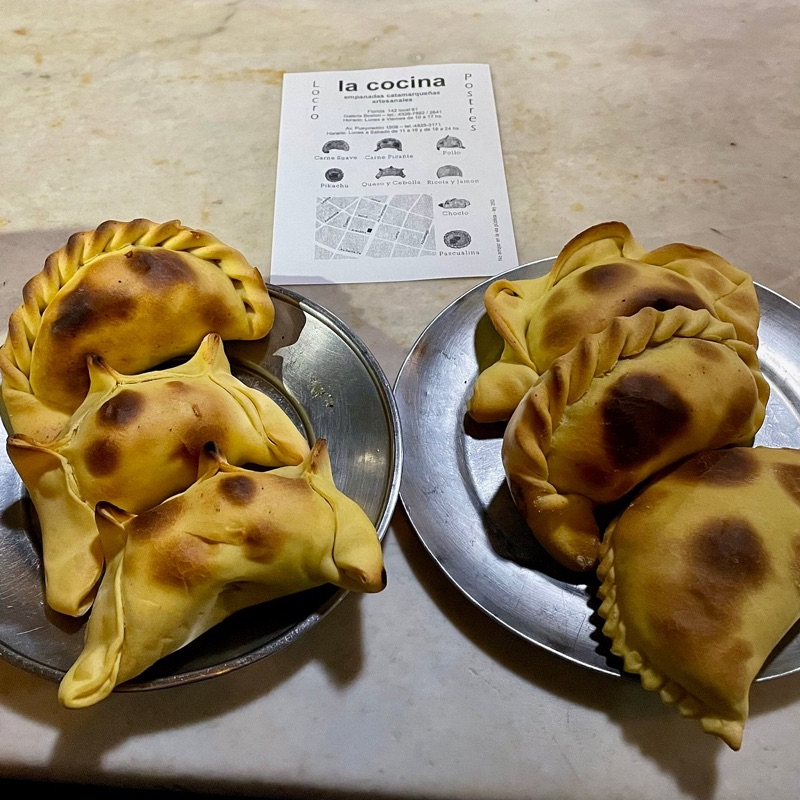
What to order: The Pikachu (cheese, onion, mild spice — no Pokémon relation) and the spicy pollo (chicken). The carne is solid but it's the creative fillings that set La Cocina apart. Open 40+ years and still the most recommended empanada in Buenos Aires — that says everything.
"I want to recommend that you go to eat empanadas at a small place called 'La Cocina' — they are my favorites."
— r/BuenosAires · Best empanadas thread
tabiji verdict: The single most recommended empanada spot in Buenos Aires across every source we checked — Reddit, expat forums, food blogs. Two locations: the Centro one is hidden in the basement of Galería Boston (an experience in itself), while the Recoleta shop is easier to find. Go during lunch rush for maximum freshness.
💰 ARS $1,000–1,500/empanada
📍 Posadas 1515, Recoleta
🔥 Style: Baked & fried
📌 Google Maps →
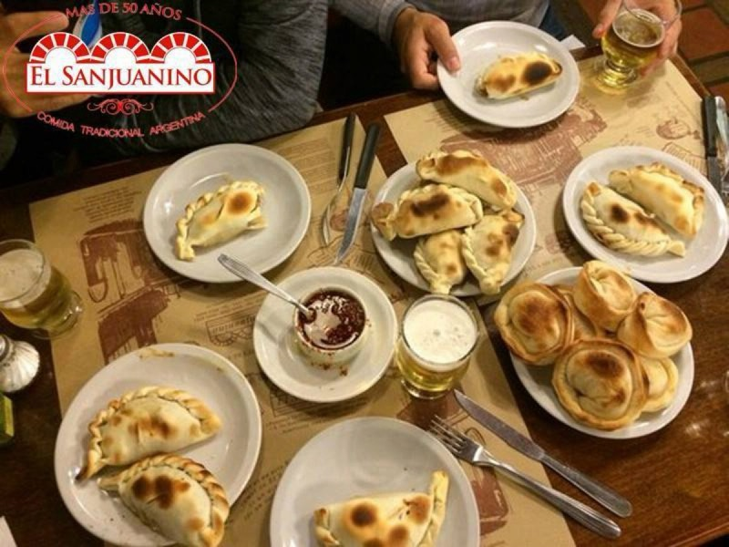
What to order: The fried empanadas are the star — get carne (beef) and pollo (chicken). Also famous for their locro (hearty stew) and tamales. It's a full northwestern Argentine experience in Recoleta. Don't skip the humita empanada if it's available.
tabiji verdict: The iconic tourist-friendly pick that locals also genuinely respect. #2 on TripAdvisor's empanada list with nearly 4,000 reviews. It's been around forever, the prices are fair, and the fried empanadas are legitimately excellent. If you're in Recoleta visiting the cemetery, this is your lunch spot.
💰 ARS $1,000–1,500/empanada
📍 Av. Independencia, San Telmo
🔥 Style: Fried to order
📌 Google Maps →
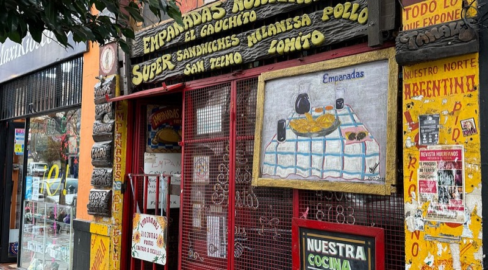
What to order: Empanadas riojanas — chopped beef, potato, egg, and green olive, fried to order so they arrive hot and crispy. They come with a proper spicy sauce (rare in BA). If it's winter, pair them with a bowl of locro stew. The filling-to-dough ratio is generous.
tabiji verdict: The San Telmo gem for fried empanada lovers. The shop itself is decorated with Gauchito Gil figures and Evita photos — part empanada shop, part folk art museum. Fried to order means zero chance of getting a sad, reheated specimen. Best paired with a San Telmo market visit.
💰 ARS $1,200–2,000/empanada
📍 Av. Callao 83, Congreso
🔥 Style: Baked, traditional
📌 Google Maps →
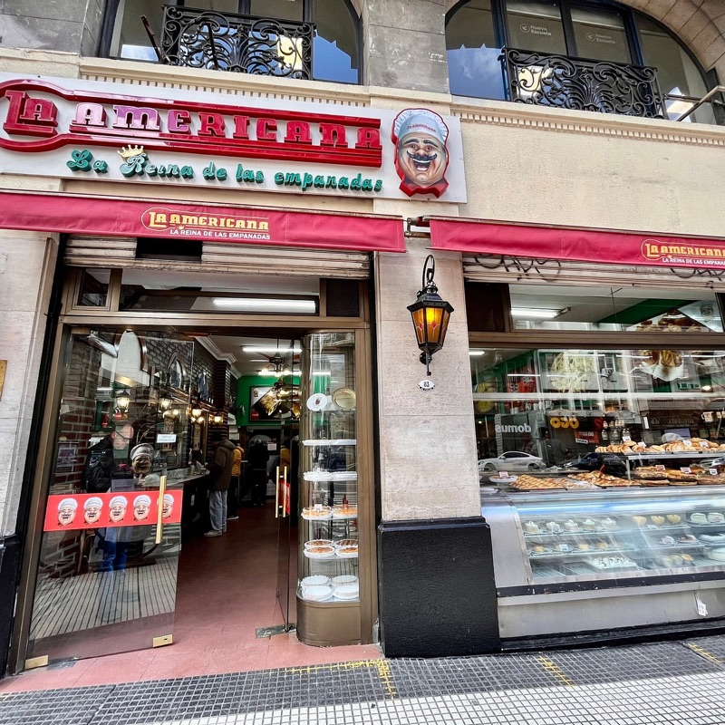
What to order: The carne suave (mild beef) is the classic — juicy, well-seasoned, with the traditional olive and egg. Also famous for their pizza. This is a Buenos Aires institution that's been feeding porteños since the 1930s. Go for the empanadas, stay for the atmosphere.
tabiji verdict: The establishment pick. La Americana has been doing this since the 1930s and still draws lines during lunch. It's also a legendary pizza spot — so you can do the classic porteño combo: empanadas to start, pizza to follow. Located steps from the Congreso building, making it an easy mid-sightseeing stop.
💰 ARS $800–1,200/empanada
📍 Multiple locations across Buenos Aires
🔥 Style: Baked, takeaway-focused
📌 Google Maps →
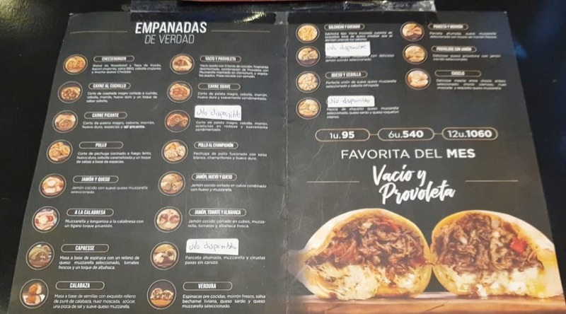
What to order: The carne cortada a cuchillo (hand-cut beef) if available, or the classic carne suave. Mi Gusto is a chain, but it's the chain that actual porteños name-drop. Good filling-to-dough ratio, consistent quality, and they're everywhere when you need an empanada fix at 11 PM.
"Motachole — mi gusto"
— u/CarelessCheek5354, r/BuenosAires · 17 upvotes
tabiji verdict: The people's champion. When r/BuenosAires asks "best empanadas?" — Mi Gusto consistently tops the comments with serious upvotes. It's a chain, yes, but the kind of chain where locals genuinely argue about which location is best. The empanada equivalent of a beloved local pizza chain that just gets it right.
💰 ARS $1,200–2,000/empanada
📍 Belgrano
🔥 Style: Bolivian, larger, stew-filled
📌 Google Maps →
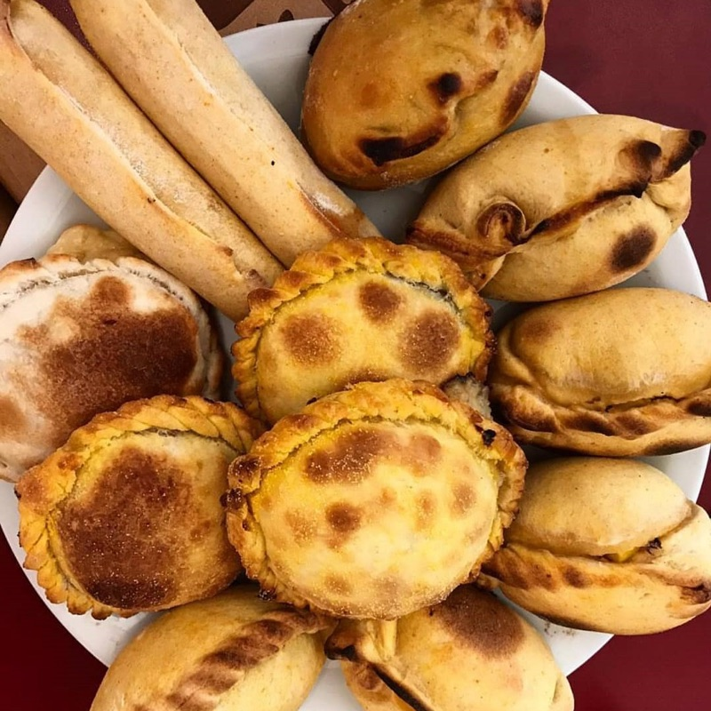
What to order: The carne picante (actually spicy — rare in BA), puka-kapa (spicy cheese and onion), and the chicken. Bolivian empanadas are larger, with slightly sweeter dough and fillings that taste like stew tucked into pastry. A completely different experience from standard Argentine empanadas.
tabiji verdict: The gateway to Bolivian empanadas — and once you try them, you'll understand why people get evangelical about salteñas. The dough has more character than typical Argentine versions, and the fillings actually bring heat. Open since the early '90s in Belgrano. A sit-down experience, not grab-and-go.
💰 ARS $1,500–2,500/salteña
📍 Saavedra
🔥 Style: Bolivian salteñas (soupy, sweet dough)
📌 Google Maps →
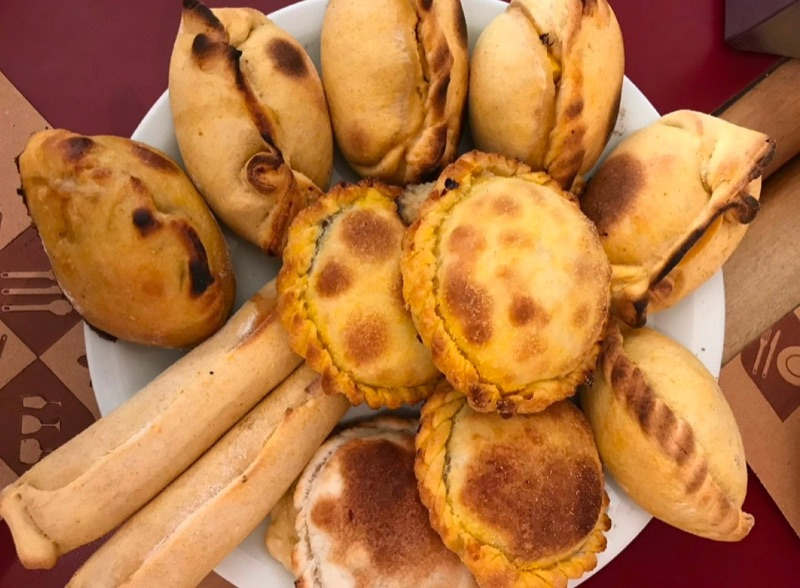
What to order: The chicken salteña or the classic beef (suave or picante). The drill: bite a small vent hole, let the steam escape, tilt, sip the caldo (broth), then devour. Order house llajua (tomato-ají salsa) on the side — it's mandatory. These are football-shaped, glossy, and filled with actual soup.
tabiji verdict: A Redditor on r/finedining — a sub that reviews Michelin-starred restaurants — called these "the best empanadas of our lives." The recipe comes from the owner's Bolivian grandmother's 1970s Palermo shop. It's a trek to Saavedra, but salteñas this good justify the journey. Delivery is available if you're lazy.
💰 ARS $1,000–1,800/empanada
📍 Uriarte, Palermo Soho
🔥 Style: Arab empanadas (fatay), baked to order
📌 Google Maps →
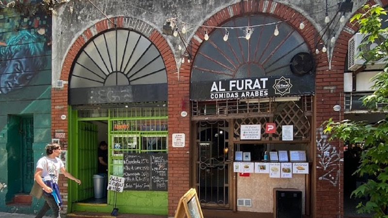
What to order: The empanada árabe (fatay) — triangular meat pies with lemony ground beef, onion, and tomato in soft yeasted dough. Also excellent: spinach and ricotta version. Everything is made by hand and baked to order. Served with a lemon wedge. No tables, no branding — just a window on Uriarte.
tabiji verdict: Argentina has a massive Arab diaspora, and Al Furat is where that heritage meets empanada culture. Alicia Zayoud has been making these by hand for decades. If you walk by at the right time, you'll see her rolling dough in the window. Don't bother asking for the recipe — she won't give it out, not even to friends.
💰 ARS $1,500–2,500/empanada
📍 Anchorena & San Luis, Abasto
🔥 Style: Wood-fired (quebracho), homemade dough
📌 Google Maps →
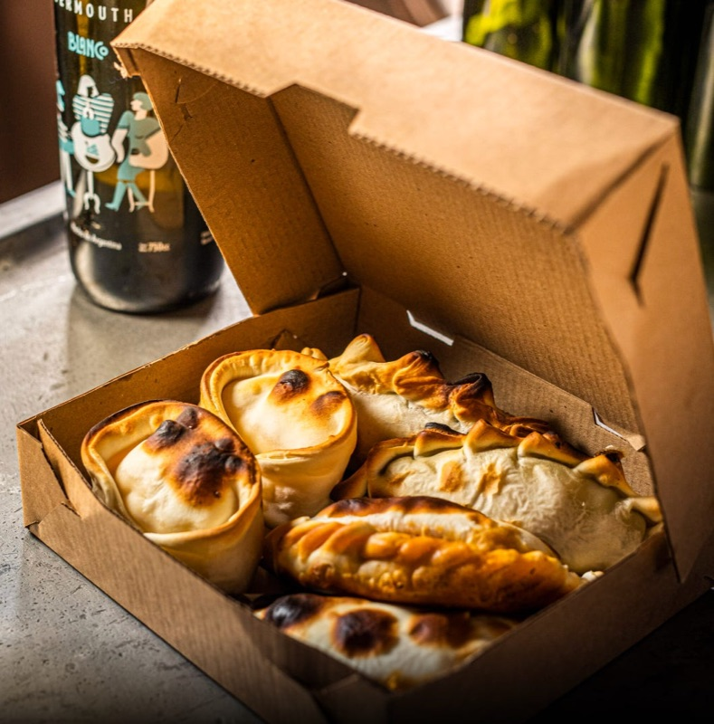
What to order: The carne picante (proper ají locoto heat with hard-boiled egg), pollo a la leña (wood-roasted chicken, caramelized onion, paprika), or the choclo norteña (corn, zapallo, leek, basil, nutmeg). Chase them with a glass of house vermouth. The dough gets a kiss of smoke from the quebracho-fueled oven.
tabiji verdict: The hipster pick that actually delivers. A revived 1940s pizzería-bar with oak bar, marble tops, and a clay oven glowing behind it all. The homemade dough and wood-fire cooking put these in a different league from places using pre-made La Salteña wrappers. Come for the empanadas, stay for the atmosphere and vermouth.
💰 ARS $1,200–2,000/empanada
📍 Buenos Aires
🔥 Style: Baked, traditional bodegón
📌 Google Maps →
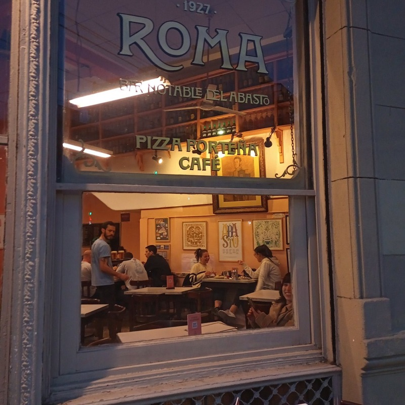
What to order: The classic carne empanada — this is a bodegón (old-school neighborhood bar/restaurant) so expect traditional fillings done with care. Bar Roma's strength is the no-frills approach: good dough, generous filling, honest pricing. A local haunt, not a tourist attraction.
tabiji verdict: When someone on r/finedining — a subreddit that debates whether to add a seventh course at Noma — tells you to go to a bodegón for empanadas, you listen. Bar Roma is the kind of place you'd never find on TripAdvisor. That's exactly the point.
💰 ARS $1,500–2,500/empanada
📍 Castillo & Bonpland, Chacarita
🔥 Style: Clay horno, vegetable-forward
📌 Google Maps →

What to order: The Pascualinda (spinach, coconut béchamel, toasted almonds), La Forest (mushrooms, caramelized onion, mozzarella, rosemary), or the Shariff (texturized soy, red pepper, baharat, dried apricot, mint chimichurri). For meat-eaters, the Clandestina is the lone beef option. Between batches, there's a Rolling Stones pinball machine.
tabiji verdict: The empanada spot for people who think empanadas are just "meat in dough." Vecindá flips the script: vegetables lead, meat makes a cameo. The clay horno adds wood-fired character. The Chacarita location is cool, a little chaotic, and exactly what a vegetable-forward empanada shop should feel like. Great for vegetarians who feel left out of empanada culture.
💰 ARS $800–1,500/empanada
📍 Multiple locations
🔥 Style: Salta-style, baked & fried
📌 Google Maps →
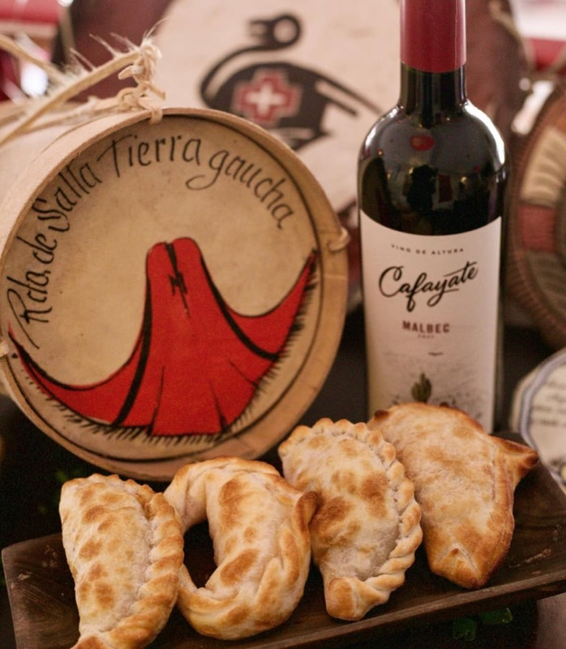
What to order: The empanada salteña — smaller, with potato, and more intensely spiced than the standard porteña version. Get them fried for maximum crunch. Also try the locro and tamales for the full northern Argentine experience. The juicier, more flavorful style of Argentina's north shines here.
"In the north of Argentina, the empanada is juicier. If you're in Buenos Aires, you can try them at El Fortín Salteño and the Bolivian Market in Liniers."
— r/BuenosAires · Best empanada in BA thread
tabiji verdict: If you've only had Buenos Aires-style empanadas, El Fortín Salteño will recalibrate your expectations. Northern Argentine empanadas are juicier, more heavily spiced, and smaller — you'll eat three before you know it. The Redditor who recommended it also pointed to the Bolivian market in Liniers for the truly adventurous.
💰 ARS $1,000–1,800/empanada
📍 Monserrat (also Recoleta)
🔥 Style: Baked, regional varieties
📌 Google Maps →
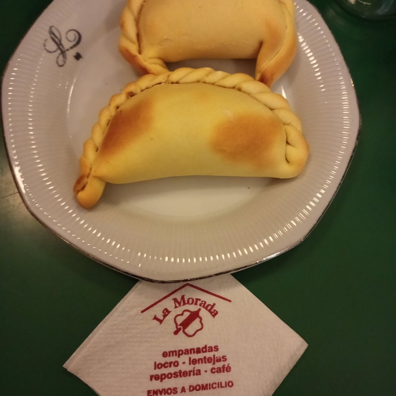
What to order: Their menu is longer than most — try a mix of regional fillings alongside porteño favorites. They also serve lentil stew, tartas, and locro year-round (food usually reserved for patriotic holidays). A great spot to bring visitors for a taste of regional home cooking.
tabiji verdict: The walls are covered in vintage soda bottles, Mafalda comics, and Argentine memorabilia — part restaurant, part cultural museum. Rumor has it the owners used to work at La Cocina and took the empanada recipe with them. Unconfirmed, but it adds drama. Either way, the empanadas are excellent.
💰 ARS $800–1,200/empanada
📍 Multiple locations across Buenos Aires
🔥 Style: Tucumán-style, fried
📌 Google Maps →
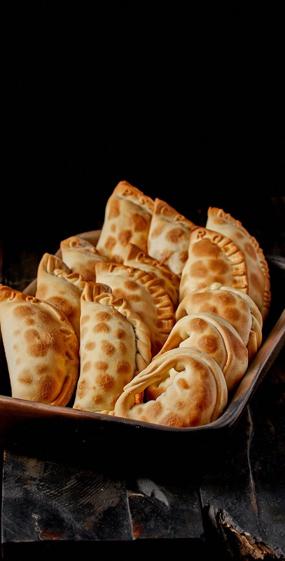
What to order: Tucumán-style empanadas — traditionally fried with hand-chopped beef. In Tucumán, empanada tradition dictates exactly 13 repulgues (crimps) per empanada as a nod to Jesus and the 12 Apostles. Rincón Norteño brings that northern pride to Buenos Aires. Squeeze lemon on top, Tucumán-style.
tabiji verdict: Buenos Aires has no shortage of places claiming "northern-style empanadas." Rincón Norteño is one that Reddit locals actually name. The Tucumán style — fried, hand-chopped beef, served with lemon — is fundamentally different from the baked porteña empanada. Try both to understand why Argentines argue about empanadas like Americans argue about barbecue.
💰 ARS $800–1,500/empanada
📍 Everywhere — 100+ locations across Buenos Aires
🔥 Style: Baked, widest filling variety
📌 Google Maps →
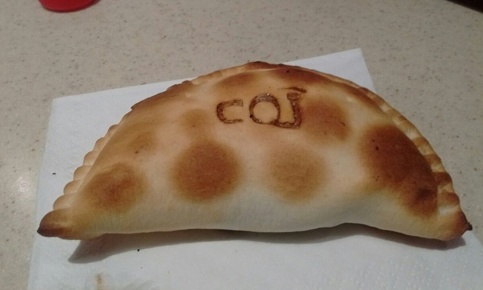
What to order: El Noble's strength is variety — they have 20+ fillings including creative options like roquefort & nuez (blue cheese and walnut) and verdura (spinach). The carne suave is reliably good. They're also the most accessible option: there's an El Noble within walking distance of virtually anywhere in Buenos Aires.
tabiji verdict: The McDonald's comparison isn't fair — El Noble is more like the Chipotle of empanadas. Consistent, slightly premium, and genuinely good for a chain. They won't change your life, but at midnight when you need an empanada and nothing else is open, El Noble will be there for you. The roquefort & nuez is surprisingly excellent.
Frequently Asked Questions
How much do empanadas cost in Buenos Aires?
In 2026, a single empanada costs roughly ARS $800–2,500 (around $0.50–$1.50 USD). A dozen typically runs ARS $8,000–25,000. Chain shops like El Noble and Mi Gusto are cheapest, while sit-down spots and wood-fired places charge more. By global standards, empanadas remain one of the best food deals anywhere.
What are the classic empanada fillings in Buenos Aires?
The most traditional: carne (beef with onion, egg, olive, cumin), pollo (chicken), jamón y queso (ham and cheese), and humita (sweet corn). Regional styles add variety: Salta-style are smaller with potato, Tucumán-style use hand-chopped beef, and Bolivian salteñas are filled with soupy stew. Most places also offer caprese, verdura (spinach), and roquefort.
Should I get baked or fried empanadas?
Both are excellent when done right. Baked (al horno) is the BA default — golden, flaky, lighter. Fried (fritas) are crispier and richer, more common in northern styles. For fried, try El Gauchito or El Fortín Salteño. For baked, La Cocina and El Sanjuanino are hard to beat. The real answer: try both.
Where can I find northern-style empanadas in Buenos Aires?
For Salta-style: El Fortín Salteño. For Tucumán-style fried: Rincón Norteño. For Bolivian salteñas: TayTay (Saavedra) and La Paceña (Belgrano). The Bolivian market area in Liniers is also worth the trip for the most authentic experience. Northern empanadas are juicier and more intensely spiced than the standard porteña version.
Are empanada chains like El Noble worth trying?
El Noble is the most respected chain — consistent quality with the widest filling variety. Mi Gusto is another strong option with genuine local love on Reddit. They won't compete with specialist shops, but they're reliable, cheap, and everywhere. Perfect for a quick grab-and-go when you don't want to hunt down a hidden gem.